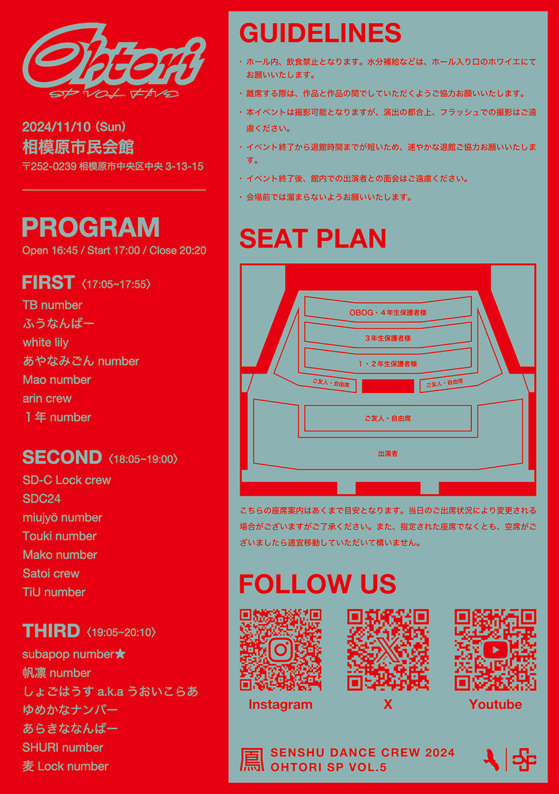
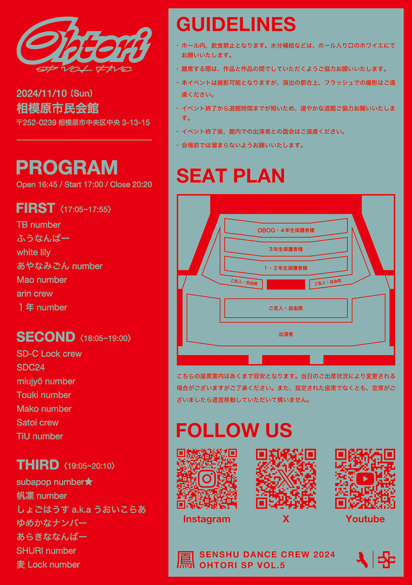

関 海月
（せき みつき）
2003年生まれ、神奈川県出身。 専修大学ネットワーク情報学部コンテンツデザイン専攻で、デザインとプログラミングの基礎を学ぶ。 大学での学びを通してグラフィックデザインやWebデザインに強い関心を持ち、現在は独学で応用的な知識や技術の習得に励む。
2003年生まれ、神奈川県出身。 専修大学ネットワーク情報学部コンテンツデザイン専攻で、デザインとプログラミングの基礎を学ぶ。 大学での学びを通してグラフィックデザインやWebデザインに強い関心を持ち、現在は独学で応用的な知識や技術の習得に励む。
幼少期から何かを表現することが好きで、クリエイティブな仕事に携わりたいと思い、大学では情報学やデザインについて学びました。
「美しさ」と「わかりやすさ」のどちらも妥協しない、“美麗かつ明瞭”なデザインを心がけています。
現在は独学でデザインの知識やスキルを深めることを目標に、日々学習を続けています。
将来的にはAIと共存しながら、価値あるデザインを生み出せるWeb・UI/UXデザイナーを目指しています。
ダンスが趣味で、そこで培った表現力や独自のグルーブが、デザインをはじめとした表現活動の大きな助けとなっています。

UI/UXを意識したWebサイト・LP・バナーのデザインが可能です。
そのほか、ロゴやアイコン、フライヤーなどの販促物も制作します。
見る人にとってわかりやすく、心地よいビジュアルを丁寧に設計します。
Illustrater / Photoshop / Figma
HTML/CSSを用いたWebサイトの実装が可能です。
デザインの意図を反映し、レスポンシブやアクセシビリティに配慮したコーディングを心がけています。
AIを用いて複雑な動作を実装しています。
HTML / CSS / Javascript
チームでのゲーム開発やワークショップの開催など、小規模プロジェクトの企画・運用の経験があります。
目的やターゲットに合わせ、企画から形にするまでのプロセス全体に関わることができます。
Miro / Notion / Google Slides
学内外を問わず、制作活動には常に全力で取り組み、新しい技術や表現方法も積極的に取り入れることで、自身の引き出しを増やしてきました。 また、気になるデザインは日常的に収集・分析し、トレンドを捉える意識も大切にしています。 さらに、ダンスを幼少期から続けてきた経験からは、表現力と粘り強く続ける力も養われており、これまでの学びや経験が確実にデザインに生きています。
細部までこだわり抜く姿勢を持ち、完璧を追求しながらも、冷静に全体を俯瞰して最適なバランスを見極めることができます。 視線誘導や余白、配色などの基本原則を理解し、感覚的なセンスと理論的な視点の両方を活かすことで、見た目の心地よさと伝わりやすさを兼ね備えたデザインを心がけています。 こうした姿勢を大切にしながら、常にアウトプットの質を高めていくことを意識しています。
情報設計・ビジュアル表現・企画立案・ユーザーリサーチなど、大学で幅広く学んできた経験から、ひとつの視点に偏らず、物事を多角的かつ総合的に捉える力が培われました。 それぞれの分野で得た知識や考え方を組み合わせることで、柔軟で実践的なアプローチが可能になり、課題や目的に応じて最適な手段を選び取る判断力にもつながっています。
website / web design / coding
workshop / direction / logo / poster
dance circle / flyer
就職活動用のポートフォリオサイトを制作しました。 トップページには、趣味であるダンスのポージングを取り入れ、自分らしさを表現しています。 全体のデザインは白と黒を基調とし、写真の色味も丁寧に調整することで統一感のある世界観を構築しました。 また、採用担当者様の視点も意識し、情報が伝わりやすく、バランスの取れた構成を心がけました。
Web・デザイン系の企業における採用担当者の方々。
自身の制作物をまとめた専用サイトが存在しておらず、スキルや制作意図を十分に伝えられない。 書類だけでは人柄や価値観といった情報が伝わりにくく、印象に残りづらい。
採用担当者の方々に、作品やスキルを視覚的にわかりやすく伝えるとともに、文章やデザインを通じて自身の人柄にも触れてもらう。
閲覧する採用担当者の方にとって「見やすく、伝わりやすい」ことを第一に、構成や導線を設計しました。 作品紹介は1ページごとにまとめ、ビジュアルと文章のバランスに配慮しながら、閲覧者が迷わず内容を把握できる構成を目指しています。 また、制作物の背景や意図がしっかり伝わるよう、説明文のトーンや長さも調整しました。 プロフィールやコンタクトページでは、無駄な情報を省きつつも人となりが伝わるよう工夫しています。
自身の趣味であるダンスの要素をトップページに取り入れるなど、個性を表現しつつも、全体としては白と黒を基調にしたシンプルなデザインで世界観に統一感を持たせました。 写真やアイコンなどの素材は丁寧に色調整を行い、トーンがバラつかないよう配慮しています。 レイアウトでは「見やすさ」と「余白の美しさ」を両立させるため、細かな余白調整やフォントサイズの使い分けにもこだわりました。 現在もブラッシュアップを続けており、細部まで完成度を高めている最中です。
2025年5月から現在にかけて制作を進行中。完成後も更新・改善を続けていく予定です。
Illustrator、Photoshop、Figma、VScode
大学の演習で、「親子で楽しく学べる”カガクおもちゃ”の開発」をテーマにワークショップ企画に取り組みました。 ４人１組で、おもちゃのアイデア出しから制作、ワークショップの運営まで一貫して協力しながら進行。 私は主に、企画のアイデア出しやデザイン制作、アクリルスタンドの制作に加え、説明文や案内資料などのライティングも担当しました。 チームで創り上げた体験を通して、子どもたちが楽しみながら学ぶ姿にやりがいを感じたプロジェクトです。
「どうして船は水に浮かぶの？」そんな素朴な疑問からはじまる、遊び感覚のワークショップを開催。
アクリルスタンドのおもりを安定して浮かせるため、子どもたちに身近な素材を使って船づくりに挑戦してもらいました。
「浮力とはこういうもの」と教えるのではなく、自分で試して気づくことを大切にしたプログラムです。
コップや割り箸、ストローなど、身近な素材を自由に組み合わせて船をつくります。 おもり（アクリルスタンド）を浮かせるためにはどんな形がいいかを想像しながら、オリジナルの船をデザインします。
完成した船を実際に水に浮かべ、おもりを乗せて実験します。 うまく浮かないときはどこに問題があるのかを観察し、何度も調整を重ねながら挑戦します。
試行錯誤のなかで「どうしてこの形だとうまくいくの？」「なぜ沈んでしまったの？」と自然と疑問が生まれます。 浮かぶ・沈むの違いを体感しながら、自分なりの仮説や発見につなげていくフェーズです。
学童期の子どもたち（特に低学年）とその親御さん。
子どもたちが自分で考え、楽しみながら学べる教材や、身近なものと触れ合う学びの場が不足している。
「浮力ってなんだろう？」という素朴な疑問を入り口に、浮力の原理に興味を持つきっかけを提供する。 また、親子で一緒に楽しみながら取り組める体験を通して、自ら考え、気づきを得る学びの場をつくる。
子どもが対象であるため、内容はできるだけシンプルで理解しやすくなるように意識しました。 また、「浮力とはこういうもの」と直接説明するのではなく、試行錯誤を通じて自然に学びが生まれるよう構成しました。
子どもにとって親しみやすく、わかりやすいデザインや文章表現を心がけました。 何度も試作と改善を繰り返し、テストプレイやプレゼンを通してフィードバックを得ながら完成度を高めていきました。
約4ヶ月
Illustrator、Photoshop、Figma（FigJam）、Googleドキュメント、レーザーカッター


自身も所属する専修大学のダンスサークル「SD-C」で広報を担当し、学園祭シーズンに合わせて開催されたSD-C主催イベント「鳳祭」のフライヤーを制作しました。 約400人が来場する市民ホールでの発表イベントのため、“鳳”をモチーフに、親しみやすくポップでおしゃれな雰囲気に仕上げました。 プログラムや注意事項など、来場者が必要な情報をスムーズに得られるよう構成にも工夫を凝らしています。
サークル所属学生とその友人や家族、サークルのOB・OG。
必要な情報を過不足なくまとめ、来場者が一目で理解できるようにすること。 イベントの魅力を伝え、関心を引くビジュアルに仕上げること。
イベントの日時や場所を正確に伝えることに加え、当日のプログラムや注意事項をわかりやすく案内すること。 また、事前にフライヤーを配布することで、チケット販売や集客の役割を果たすこと。
表面はイベントの世界観や雰囲気を伝えるビジュアルを主軸に、日時や会場名などの重要な情報がしっかりと目立つよう文字サイズや配置に工夫を加えました。 裏面では、プログラムや座席表、注意事項、会場アクセス、SNS情報などをカテゴリごとに分け、視認性を高めた構成にしました。
まずサークルメンバーと話し合い、方向性を共有。 テーマである「鳳」に加えて近年のレトロブームを意識し、空を舞う一羽の鳥の写真を印象的に見せる構図を考案しました。 全体は2色構成でまとめ、視認性と統一感を意識。ラフの段階からフィードバックを重ね、情報面とビジュアル面の両立を目指して仕上げました。
企画 １週間
制作 １週間
Illustrator
 
